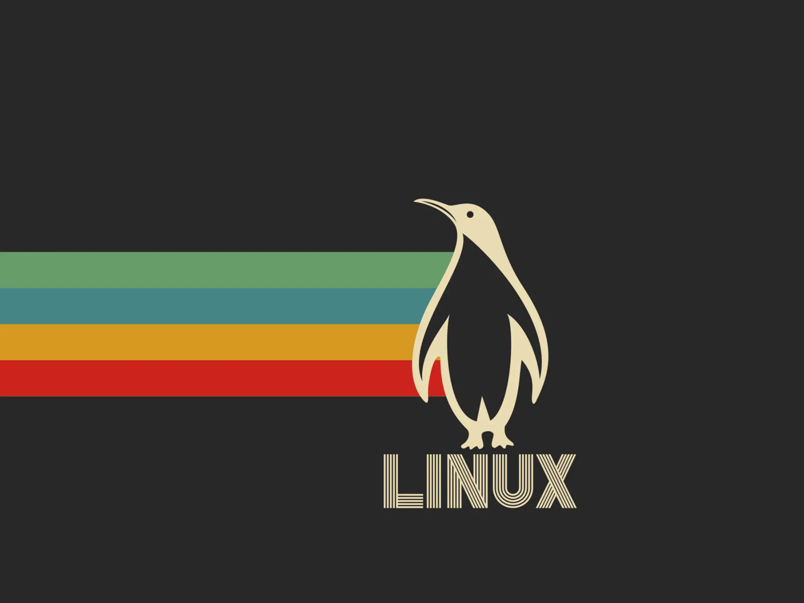
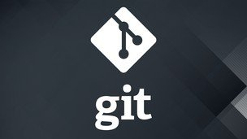

Linus Benedict Torvalds nació el 28 de diciembre de 1969 en Helsinki, Finlandia. Viene de una familia de intelectuales y activistas. Su abuelo materno, Leo Törnqvist, fue un renombrado estadístico y su padre, Nils Torvalds, un periodista y político activo en el Partido Comunista de Finlandia. Torvalds mostró un interés por la informática desde muy temprano, y obtuvo un título en Ciencias de la Computación de la Universidad de Helsinki. Su amor por la programación comenzó cuando recibió su primer ordenador a los 11 años, una Commodore VIC-20. Con el tiempo, esta pasión por la tecnología lo llevó a crear uno de los proyectos de software más influyentes de la historia.
Al día de hoy, Linus Torvalds lleva una vida relativamente sencilla, a pesar de su influencia a nivel global. En 1997, se mudó a Estados Unidos para trabajar en Transmeta, una empresa de semiconductores, y en 2003 se unió a la Linux Foundation, donde continúa su labor en el desarrollo de Linux.
Está casado con Tove Torvalds, una karateca finlandesa con la que tiene tres hijas: Patricia, Daniela y Celeste. Su familia, como él ha mencionado en varias ocasiones, es su mayor prioridad. A pesar de su reconocimiento, Torvalds ha mantenido un perfil bajo, prefiriendo enfocarse en su trabajo y en disfrutar de la vida familiar.
A lo largo de su carrera, Torvalds ha recibido numerosos premios y reconocimientos por su contribución al mundo de la informática. En 2012, la Academia de Tecnología de Finlandia galardonó a Torvalds con el premio Millennium, considerado uno de los más prestigiosos en el ámbito de la tecnología, junto a Shinya Yamanaka, un investigador japonés en biología de células madre. Este premio reconoce su trabajo en Linux y su impacto en la sociedad.
Además, el Museo de Historia de la Computadora en California incluyó a Torvalds en el Salón de la Fama de la Informática en 2000. En 2014, la revista Time lo incluyó en su lista de las 100 personas más influyentes del mundo, subrayando la relevancia continua de su trabajo.
En Finlandia, Linus Torvalds, por entonces estudiante de Ciencias de la Computación de la Universidad de Helsinki, decidió realizar la entonces cuantiosa inversión de 3500 dólares estadounidenses para adquirir un nuevo ordenador con el microprocesador Intel 80386, el cual funcionaba a 33 MHz y tenía 4 MB de memoria RAM. El pago lo realizaría a plazos, pues no disponía de tal cantidad de dinero en efectivo.
Normalmente, este ordenador lo usaba para tener acceso por línea telefónica a la red informática de su Universidad, pero debido a que no le gustaba el sistema operativo con el cual trabajaba,denominado Minix, decidió crear uno él mismo. Inicialmente, escribió un programa con lenguaje de bajo nivel prescindiendo de Minix. En los primeros intentos, consiguió arrancar el ordenador y ejecutar dos procesos que mostraban la cadena de caracteres “AAAAABBBBB”. Uno lo utilizaría para leer desde el módem y escribir en la pantalla, mientras que el otro escribiría al módem y leería desde el teclado. Inicialmente, el programa arrancaba desde un disquete.

La siguiente necesidad que tuvo fue la de poder descargar y subir archivos de su universidad, pero para implementar esta funcionalidad en el software emulador era necesario crear un controlador de disco. Así que después de un trabajo continuo y duro, creó un controlador compatible con el sistema de archivos de Minix. En ese momento, se percató de que estaba creando algo más que un simple emulador de terminal, así que, emprendió la tarea de crear un sistema operativo partiendo de cero. Sin embargo, ante la opción de quedarse con el núcleo inacabado, decidió compartirlo. "Mis razones para lanzar Linux fueron bastante egoístas", declaró, "no quería el dolor de cabeza de tratar de lidiar con partes del sistema operativo que veía como una mierda. Quería ayuda".
La siguiente necesidad que tuvo fue la de poder descargar y subir archivos de su universidad, pero para implementar esta funcionalidad en el software emulador era necesario crear un controlador de disco. Así que después de un trabajo continuo y duro, creó un controlador compatible con el sistema de archivos de Minix. En ese momento, se percató de que estaba creando algo más que un simple emulador de terminal, así que, emprendió la tarea de crear un sistema operativo partiendo de cero. Sin embargo, ante la opción de quedarse con el núcleo inacabado, decidió compartirlo. "Mis razones para lanzar Linux fueron bastante egoístas", declaró, "no quería el dolor de cabeza de tratar de lidiar con partes del sistema operativo que veía como una mierda. Quería ayuda".
De forma privada, Linus nombraba Linux a su nuevo sistema, pero cuando decidió hacer una presentación pública pensó que era demasiado egocéntrico llamarlo así y propuso llamarlo Freax (una combinación de free ("gratis") y la letra X para indicar que es un sistema similar a Unix). Sin embargo, su amigo Ari Lemmke, quien administraba el servidor FTP donde el kernel se alojó por primera vez para su descarga, lo renombró, sin consultar a Linus, porque consideraba que Freax no era un buen nombre.
Después de anunciar el 25 de agosto de 1991 su intención de seguir desarrollando su sistema para construir un reemplazo de Minix, el 17 de septiembre sube al servidor de FTP proporcionado por su universidad la versión 0.01 de Linux con 10 000 líneas de código. A partir de ese momento Linux empezó a evolucionar rápidamente.
Git es un software de control de versiones diseñado por Linus Torvalds, pensando en la eficiencia, la confiabilidad y compatibilidad del mantenimiento de versiones de aplicaciones cuando estas tienen un gran número de archivos de código fuente. Su propósito es llevar registro de los cambios en archivos de computadora incluyendo coordinar el trabajo que varias personas realizan sobre archivos compartidos en un repositorio de código.

Al principio, Git se pensó como un motor de bajo nivel sobre el cual otros pudieran escribir la interfaz de usuario o front end como Cogito o StGIT.1 Sin embargo, Git se ha convertido desde entonces en un sistema de control de versiones con funcionalidad plena. Hay algunos proyectos de mucha relevancia que ya usan Git, en particular, el grupo de programación del núcleo Linux.
El mantenimiento del software Git está actualmente (2009) supervisado por Junio Hamano, quien recibe contribuciones al código de alrededor de 280 programadores. En cuanto a derechos de autor Git es un software libre distribuible bajo los términos de la versión 2 de la Licencia Pública General de GNU.